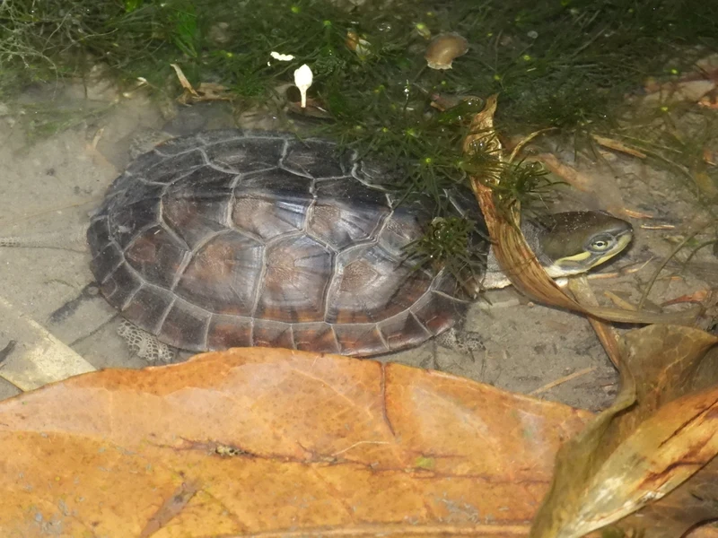

中国南部・台湾・ベトナムに分布するアジア産イシガメ。甲羅の縁が黄色みを帯び、落ち着いた外見が魅力。国内CB流通もあり、アジア産水棲ガメの入門的中級種として人気。

1年後の甲長は7〜10cm程度。中国南部〜ベトナムの水草豊かな浅い池沼・水田を好む種で、日光浴を強く好む。水面に出てきて浮島に乗る習性があり、給餌タイミングで活発に動く姿が日課になる。水棲性が高く、雑食性で魚・水草・水生昆虫を食べる。CB個体の入手ルート確認が重要。
10年後、オスは甲長12〜15cm、メスは17〜22cm程度が多い。45〜60cm水槽で安定して飼えるサイズ感。15〜30年の寿命があり、季節管理（冬の水温低下への対応）と日光浴スポットの確保が長期飼育の安定につながりやすい。
ミナミイシガメは観賞性が高く衝動購入されやすい種だが、流通個体の出自確認が大切な種でもある。CB（国内繁殖）個体を選ぶことが、長期的に安定した飼育への近道になりやすい。また冬の管理（保温通年か冬眠か）を購入前に決めておかないと、季節の変わり目に対応が遅れやすい。購入前に入手ルートの確認と冬の管理方針を固めておくことが大切。
中国南部（広東・福建・浙江）・台湾・ベトナム北部の池沼・水田・小川に分布。水草が豊富な浅い水域を好む。日光浴を好み、野生では岩や倒木の上に並んで甲羅干しをする姿が見られる。
日光浴を好む種のため、十分な陸場とバスキングライトの設置が重要です。60cm以上の水槽で水場と陸場を1:1程度に設置してください。
← 横にスクロールできます
| 種名 | 甲長 | 難易度 | 必要水槽 | 特徴 |
|---|---|---|---|---|
| ミナミイシガメ このページ | 15〜20cm | 中級 | 60cm〜 | 本種・流通多 |
| ヤエヤマイシガメ | 15〜20cm | 中級 | 60cm〜 | 亜種・希少 |
| ニホンイシガメ | 13〜20cm | 中級 | 60cm〜 | 日本固有 |
| ハナガメ | 20〜25cm | 入門〜中級 | 60〜90cm | 首縞模様 |